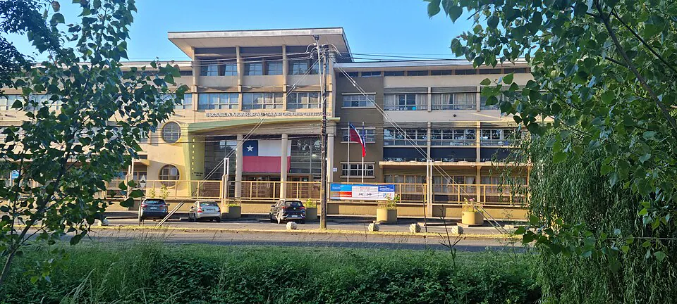

Elecciones presidenciales de 2025

Las elecciones presidenciales de 2025 se realizaron con voto obligatorio e inscripción automática, junto con elecciones parlamentarias, al término del gobierno de Gabriel Boric (2022–2026). La primera vuelta, el 16 de noviembre de 2025, reunió a candidaturas de distintos sectores. Ninguna alcanzó la mayoría absoluta, por lo que pasaron a segunda vuelta Jeannette Jara, exministra del Trabajo y candidata del oficialismo de izquierda, y José Antonio Kast, líder del Partido Republicano, que ya había sido candidato en 2017 y 2021. El 14 de diciembre de 2025, Kast se impuso en la segunda vuelta, y el 11 de marzo de 2026 asumió la presidencia para el periodo 2026–2030. La campaña estuvo marcada por temas como la seguridad, la migración, la economía y el empleo. Analistas de distintas tendencias han ofrecido explicaciones diversas del resultado, que se inscribe en la alternancia entre coaliciones presente desde 2010. Estas elecciones muestran la continuidad del sistema democrático recuperado con el Retorno a la democracia en 1990, en el que los cambios de gobierno se resuelven mediante el voto y la entrega pacífica del poder.
Versión para niños
En Chile, cada cuatro años se elige presidente. El 16 de noviembre de 2025 hubo una primera votación y, como nadie obtuvo más de la mitad de los votos, los dos candidatos más votados pasaron a una segunda vuelta. El 14 de diciembre de 2025 ganó José Antonio Kast frente a Jeannette Jara. Kast asumió como presidente el 11 de marzo de 2026, después del gobierno de Gabriel Boric. Votar es una forma pacífica de decidir el futuro de un país.
Para maestros
Nivel sugerido: 2° medio
Objetivo: Comprender el funcionamiento del sistema electoral chileno y la alternancia en el poder como parte de la vida democrática.
Preguntas para la clase:
- ¿Por qué existe la segunda vuelta en las elecciones presidenciales?
- ¿Qué ventajas y desventajas tiene el voto obligatorio?
- ¿Por qué la alternancia en el poder es importante en una democracia?
Actividad (20–30 min): Con los resultados oficiales del Servel, los estudiantes elaboran gráficos de la primera y la segunda vuelta y describen los datos sin emitir juicios sobre los candidatos. El docente recuerda que en el curso puede haber familias con distintas preferencias políticas y que el objetivo es comprender el proceso, no opinar sobre quién debía ganar.
Fuentes sugeridas: Servicio Electoral de Chile (Servel); Biblioteca del Congreso Nacional (BCN).
Objetivos de Aprendizaje (Currículum Nacional)
- 4° básico · HI04 OA 11 Distinguir algunos actores de la organización política y democrática de Chile, como Presidente … cómo son nombrados o elegidos
- 6° básico · HI06 OA 15 Explicar algunos elementos fundamentales de la organización democrática de Chile … la representación mediante cargos de elección popular (concejales, alcaldes, diputados, senadores y Presidente)
- 4° medio (Educación Ciudadana) · FG-ECIU-4M-OAC-01 Evaluar las características y el funcionamiento de la institucionalidad democrática, las formas de representación y su impacto en la distribución del poder en la sociedad
Revisión humana pendiente. Cómo se revisa · Reportar un error
Cómo citar: Historia de Chile. (2026). Elecciones presidenciales de 2025. En Historia de Chile: atlas y línea de tiempo. https://moises-salgado.github.io/historia-de-chile/momento/elecciones-presidenciales-de-2025.html